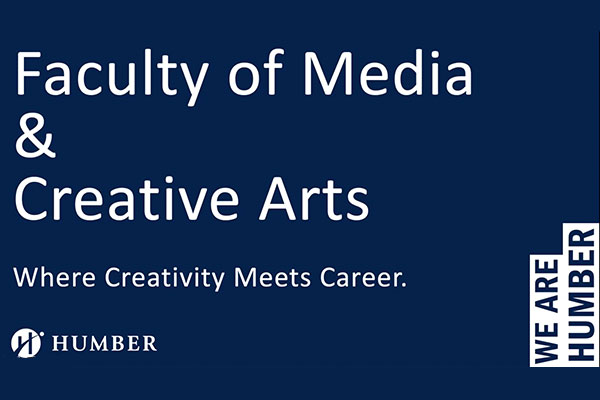
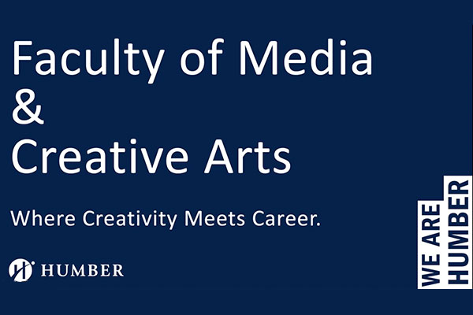

Multimedia Design and Development Program
Humbers award-winning Multimedia Design and Development diploma program offers the opportunity to participate in an extensive multimedia design education where students build a range of interactive digital media production skills including web design, mobile interface design, experience design, motion graphics, 2D animation, web coding, streaming, user testing, video and sound editing, user interface prototyping, digital storytelling, and interactive design. Through this hands-on learning process, students will develop the fundamental creative and technical multimedia design and development capabilities needed to pursue a career in user experience (UX) design, user interface (UI) design, product design, videography, motion graphics, and front-end development.
Multimedia Design and Development - Humber College. (n.d.). Retrieved October 13, 2022, from https://mediaarts.humber.ca/programs/multimedia-design-and-development.html
Recent graduates of this program have found work at Intrafinity.com, TheJuggernaut.ca, De - mac Media.com, DesignAxiom.ca, Rogers, iVillage.ca, CBC.ca, CTV.ca, SapientNitro, CHUM Radio, NuBrand.com, CanWest, MTV Canada, Macleans.ca, MacLaren McCann, Teletoon, Taxi.ca, The Weather Network, Devlin.ca and other organizations.
Multimedia Design and Development - Humber College. (n.d.). Retrieved October 13, 2022, from https://mediaarts.humber.ca/programs/multimedia-design-and-development.html